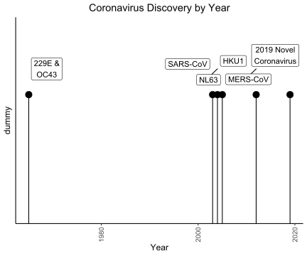

I was disappointed to find that coronaviruses have nothing to do with the beer, but instead refer to their appearance. The word “corona” is latin for “crown or garland”, which is how coronaviruses appear under microscopes. However, this does explain why the corona logo has a crown on top of it. Visually, it is more similar to the sun’s corona, which is the outer part of the sun’s atmosphere.
According to the CDC (2020) the 7 coronaviruses are:
The first human coronaviruses (229E and OC43) were first discovered in the late 1960s (Geller, Varbanov, and Duval, 2012). It wasn’t until the 2003 SARS outbreak that the next one (SARS-CoV) was found. This was followed by NL63 in 2004, and then HKU1 in 2005. Virologists decided to take a break for 7 years, and only discovered the next one (MERS-CoV) due to the MERS outbreak in 2012. That brings us to the current outbreak of Wuhan Virus when the 7th coronavirus (2019 Novel Coronavirus) was discovered. I know “2019 Novel Coronavirus” doesn’t have a great ring to it, but MERS-CoV was actually called “Novel Coronavirus 2012” before it got a final name.

The first four (229E, NL63, OC43, and HKU1) are often associated with the common cold.